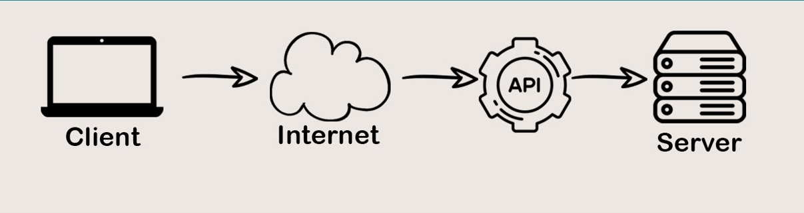
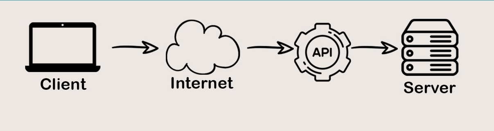

API
Kas ir API?
API(Application Programming Interface jeb aplikācijas programmēšanas interfeiss) ir programmu mijiedarbības veidu apraksts un kā viņi var sazināties un pārsūtīt datus viens otram.
Citiem vārdiem sakot, API ir tas, ko lietojumprogramma var veikt pēc citu lietojumprogrammu pieprasījuma. API sastāv no divām daļām – mijiedarbības interfeisa un tā apraksta.
 

Kā darbojas API?
Lai būtu vieglāk saprast ka darbojas API, mēs varam domāt par API kā par viesmīli. Viņš piedāvā ēdienu sarakstu un to aprakstu. Viesmīlis aizved pasūtījumu uz virtuvi un pavāri to gatavo.
Mums nav jāzina kā edienus pagatavo. Rezultātā mums atnes gatavu ēdienu. Tā notiek arī ar API.
Kur tiek izmantota API?
API ir sastopama un izmantota gandrīz visur: programmēšanas valodās, operētājsistēmā, tīmekļa serveros. Vispopulārākie api API ir-Linux Kernel API, Windows API, SDL utt.
Google Map lappuse
Main lappuse